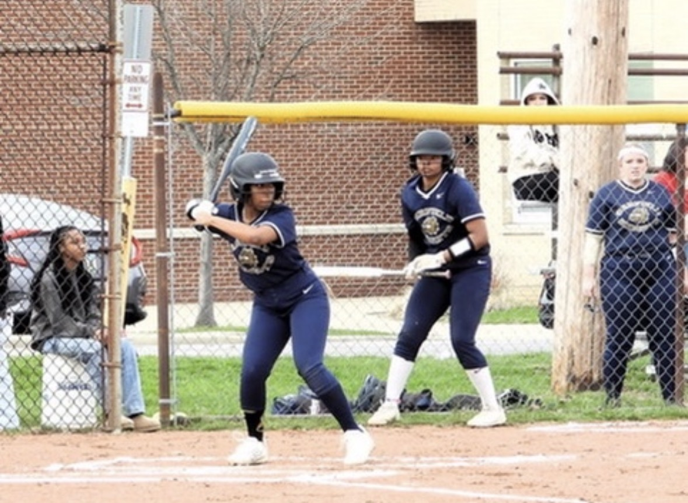
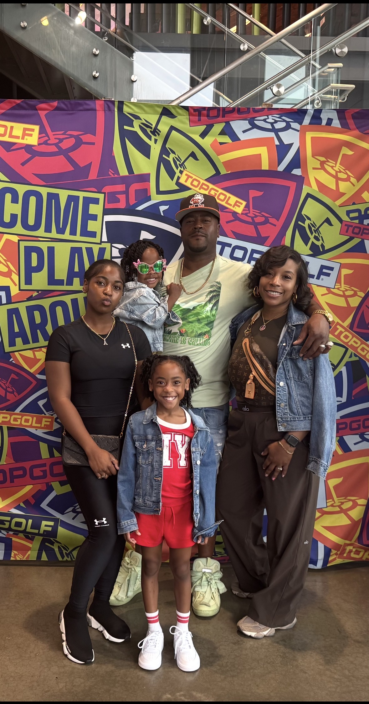

Growing Up
- As I grew up, I watched a lot of TV, like A LOT. Television in my family is kind of how we bond, so to spend time with each other, we watch TV. Most of our English has been replaced with movie quotes. I love watching TV, and I like that it brought my family together. It plays a big role in how I grew up and I wouldn't complain.
- I also had lots of sleepovers, especially because I have a lot of cousins my age, but I had no siblings until I was 10. I used to have sleepovers everywhere, cousins' houses, grandad's house, grandma's house, you name it, we were there. I appreciate those times because I got to spend time with a lot of my family and I really feel that also plays a huge role in my upbringing because of how family oriented we are.
- Up until I was 10 years old, I was an only child. Don't get me wrong, it's nothing wrong with that, but it definitely changed things. Imagine having parents to yourself for 10 years and then a random day in June caused you to share them for the rest of your life. I'm happy my parents had my two little sisters, because I now know what it feels like to have siblings, and I love them dearly. Bailey, my 7 year old sister, is wonderful at gymnastics, while my other sister, Brielle, is the baby and brat of the family, but I love them the most.
A Little More (Sports)

- Growing up, I also played softball. I started playing when I was just 4 years old, starting with T-ball. I then started playing for the rec center, up until I got to middle school. Middle school softball was way different than rec softball, but I still loved the sport. When I am on the field, I actually feel the feeling of happiness and it makes me feel great! Softball keeps me busy, and I hope to play in college.
- I also played soccer growing up, up until 7th grade. I started playing soccer when I had just freshly turned five. My father signed me up for indoor soccer. I fell in love with it, and eventually started playing outdoor soccer as well. As much as I loved soccer, I had to let it go because I didn't care for the team. I still love soccer, but from a distance. Maybe I will play again one day.
- Last but not least, I also ran track and practiced gymnastics growing up. My cousin is a track coach and she runs a little league, so I used to come and go on the team as I pleased. I ran in a couple meets, and I liked the workouts, but it just wasn't for me. I tried again my freshman year and didn't care for it. I did gymnastics for 2 years as well, but I didn't care for it. This concludes my little sports history and I hope you enjoyed.
Some Of The People I Love

- MaKenzi
- MaKenzi is my best friend. She is like the big sister I never had. I am extremely thankful for her because she helps me get through life. When I'm sad, I text Kenzi, when I'm happy, I text Kenzi, and so on. I am thankful for my best friend because she is my family.
- My Sisters
- Bailey and Brielle are my baby sisters. I love them so much. They are my built in best friends, my spoiled brats, but I love them oh so dearly. I could not imagine my life without them, and I just want to set a good example for them.
- My Parents
- My parents are my creators, so how could I not love them? My dad and my mom are both my best friends. I am extremely grateful for my parents because they introduced me to a lot of things, and I could not make things happen without them.
- My Grandparents
- I look at my grandparents as rays of sunshine. They are the most supportive and positive people I know. I have 10 grandparents, and I love them all dearly. Their doors are always open for me and they always give me a shoulder to lean on. I love making my grandparents proud.